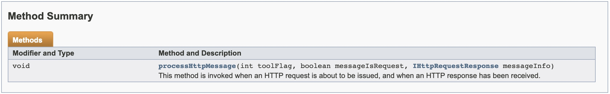

在我们讨论每种语言的细节之前，需要记住一些常规上下文：Burp查找一个名为BurpExtender的类来实例化（没有构造函数参数），然后在此对象上调用registerExtenderCallbacks（）并传入一个“callbacks”对象。 将此视为您的扩展的入口点，允许您告诉Burp您的扩展程序的功能，以及Burp何时应该询问您的扩展程序问题。
- 接口IHttpListener
- 效果
- 接口 IProxyListener
- 接口 IScannerListener
- 接口 IExtensionStateListener
- 接口 IHttpRequestResponse
- 接口 IHttpService
- 接口 ISessionHandlingAction
- 接口 IResponseInfo
接口IHttpListener
一般定义
public interface IHttpListener
利用扩展实现此接口，然后调用IBurpExtenderCallbacks.RegisterHttpListener（）注册HTTP监听器。任何Burp工具发出的请求和响应都会通知监听器。
可选方法

注释:当即将发出HTTP请求或接收到HTTP响应时，将调用此方法。
方法细节
void processHttpMessage(int toolFlag,
boolean messageIsRequest,
IHttpRequestResponse messageInfo)
参数
toolFlag:指示发出请求的burp工具的标志。BURP工具标志在IBurpExtenderCallbacks接口中定义。
messageIsRequest:指示HTTP消息是请求还是响应。
messageInfo:要处理的请求/响应的详细信息。扩展可以调用此对象上的setter方法来更新当前消息，从而修改burp的行为。
举例
from burp import IBurpExtender
from burp import IHttpListener
from java.io import PrintWriter
class BurpExtender(IBurpExtender, IHttpListener):
#
# 实现 IBurpExtender
#
def registerExtenderCallbacks(self, callbacks):
# 保留对回调对象的引用
self._callbacks = callbacks
# 设置扩展名
callbacks.setExtensionName("Nianhua HttpListener")
# 获取我们的输出流
self._stdout = PrintWriter(callbacks.getStdout(), True)
# 将自己注册为HTTP监听器
callbacks.registerHttpListener(self)
#
# 实现 IHttpListener
#
def processHttpMessage(self, toolFlag, messageIsRequest, messageInfo):
self._stdout.println(
("HTTP request to " if messageIsRequest else "HTTP response from ") +
messageInfo.getHttpService().toString() +
" [" + self._callbacks.getToolName(toolFlag) + "]")
效果
接口 IProxyListener
一般定义
public interface IProxyListener
扩展可以实现此接口，然后调用IBurpExtenderCallbacks.RegisterProxyListener（）注册代理监听器。代理工具将通知监听器正在处理的请求和响应。扩展可以通过注册代理监听器来执行这些消息的自定义分析或修改，并在UI消息拦截中进行控制。
可选方法
注释:当代理正在处理HTTP消息时，将调用此方法。
方法细节
void processProxyMessage(boolean messageIsRequest,
IInterceptedProxyMessage message)
参数
messageIsRequest: 指示HTTP消息是请求还是响应。
message:扩展可用于查询和更新消息详细信息的IInterceptedProxyMessage对象，并控制是否应截取消息并将其显示给用户以供手动审阅或修改。
举例
from burp import IBurpExtender
from burp import IProxyListener
from java.io import PrintWriter
class BurpExtender(IBurpExtender, IProxyListener):
#
# 实现 IBurpExtender
#
def registerExtenderCallbacks(self, callbacks):
# 保留对回调对象的引用
self._callbacks = callbacks
# 设置扩展名
callbacks.setExtensionName("Event listeners")
# 获取我们的输出流
self._stdout = PrintWriter(callbacks.getStdout(), True)
# 将自己注册为代理监听器
callbacks.registerProxyListener(self)
#
# 实现 IProxyListener
#
def processProxyMessage(self, messageIsRequest, message):
self._stdout.println(
("Proxy request to " if messageIsRequest else "Proxy response from ") +
message.getMessageInfo().getHttpService().toString())
效果
接口 IScannerListener
一般定义
public interface IScannerListener
扩展可以实现此接口，然后调用IBurpExtenderCallbacks.registerScannerListener（）来注册Scanner侦听器。 将通知侦听器扫描程序工具报告的新问题。 扩展可以通过注册Scanner侦听器来执行自定义分析或记录扫描程序问题。
可选方法
注释:将新问题添加到Burp Scanner的结果时，将调用此方法。
方法细节
void newScanIssue(IScanIssue issue)
参数
issue:扩展可以查询的IScanIssue对象，以获取有关新问题的详细信息。
举例
from burp import IBurpExtender
from burp import IScannerListener
from java.io import PrintWriter
class BurpExtender(IBurpExtender, IScannerListener,):
#
# 实现 IBurpExtender
#
def registerExtenderCallbacks(self, callbacks):
# 保留对回调对象的引用
self._callbacks = callbacks
# 设置扩展名
callbacks.setExtensionName("Event listeners")
# 获取我们的输出流
self._stdout = PrintWriter(callbacks.getStdout(), True)
# 将自己注册为扫描仪监听器
callbacks.registerScannerListener(self)
#
# 实现 IScannerListener
#
def newScanIssue(self, issue):
self._stdout.println("New scan issue: " + issue.getIssueName())
效果
接口 IExtensionStateListener
一般定义
public interface IExtensionStateListener
扩展可以实现此接口，然后调用IBurpExtenderCallbacks.registerExtensionStateListener（）来注册扩展状态侦听器。 收件人将收到有关扩展程序状态更改的通知。 注意：启动后台线程或打开系统资源（例如文件或数据库连接）的任何扩展都应注册侦听器，并在卸载扩展时终止线程/关闭资源。
可选方法
卸载扩展时调用此方法。
方法细节
void extensionUnloaded()
参数
None
举例
from burp import IBurpExtender
from burp import IExtensionStateListener
from java.io import PrintWriter
class BurpExtender(IBurpExtender, IExtensionStateListener):
#
# 实现 IBurpExtender
#
def registerExtenderCallbacks(self, callbacks):
# 保留对回调对象的引用
self._callbacks = callbacks
# 设置扩展名
callbacks.setExtensionName("Event listeners")
# 获取我们的输出流
self._stdout = PrintWriter(callbacks.getStdout(), True)
# 将自己注册为扩展状态侦听器
callbacks.registerExtensionStateListener(self)
#
# 实现 IExtensionStateListener
#
def extensionUnloaded(self):
self._stdout.println("Extension was unloaded")
效果
接口 IHttpRequestResponse
一般定义
public interface IHttpRequestResponse
此接口用于检索和更新有关HTTP消息的详细信息。 注意：setter方法通常只能在处理消息之前使用，而不能在只读上下文中使用。 与响应详细信息相关的getter方法只能在请求发出后使用。
可选方法
方法细节
getRequest
byte[] getRequest()
此方法用于检索请求消息。
返回:请求消息。
setRequest
void setRequest(byte[] message)
此方法用于更新请求消息。
参数:message - 新请求消息。
getResponse
byte[] getResponse()
此方法用于检索响应消息。
返回:响应消息。
setResponse
void setResponse(byte[] message)
此方法用于更新响应消息。
参数:message - 新的响应消息。
getComment
java.lang.String getComment()
如果适用，此方法用于检索此项的用户注释。
返回:此项目的用户注释，如果未设置，则为null。
setComment
void setComment(java.lang.String comment)
这个方法用于更新此项的用户注释。
参数:comment - 要分配给此项目的注释。
getHighlight
java.lang.String getHighlight()
如果适用，此方法用于检索此项目的用户注释突出显示。
返回:此项目的用户注释突出显示，如果未设置，则为null。
setHighlight
void setHighlight(java.lang.String color)
此方法用于更新此项目的用户注释突出显示。
参数:color - 要分配给此项目的高亮颜色。 可接受的值包括：red, orange, yellow, green, cyan, blue, pink, magenta, gray,或null:以清除任何现有的颜色。
getHttpService
IHttpService getHttpService()
此方法用于检索此请求/响应的HTTP服务。
返回：包含HTTP服务详细信息的IHttpService对象。
setHttpService
void setHttpService(IHttpService httpService)
此方法用于更新此请求/响应的HTTP服务。
参数：httpService - 包含新HTTP服务详细信息的IHttpService对象。
举例
from burp import IBurpExtender
from burp import IHttpListener
HOST_FROM = "www.ip138.com"
HOST_TO = "www.ip38.com"
class BurpExtender(IBurpExtender, IHttpListener):
#
# 实现 IBurpExtender
#
def registerExtenderCallbacks(self, callbacks):
# 获取扩展助手对象
self._helpers = callbacks.getHelpers()
# 设置扩展名
callbacks.setExtensionName("Traffic redirector")
# 将自己注册为HTTP监听器
callbacks.registerHttpListener(self)
#
# 实现 IHttpListener
#
def processHttpMessage(self, toolFlag, messageIsRequest, messageInfo):
# 只处理请求
if not messageIsRequest:
return
# 获取请求的HTTP服务
httpService = messageInfo.getHttpService()
# 如果主机是HOST_FROM，请将其更改为HOST_TO
if (HOST_FROM == httpService.getHost()):
messageInfo.setHttpService(self._helpers.buildHttpService(HOST_TO,
httpService.getPort(), httpService.getProtocol()))
效果
这个效果没办法，因为在这个IP上找不到对应的站点。
接口 IHttpService
一般定义
public interface IHttpService
此接口用于提供有关HTTP服务的详细信息，可以向其发送HTTP请求。
可选方法
方法细节
getHost
java.lang.String getHost()
此方法返回服务的主机名或IP地址。
返回：服务的主机名或IP地址。
getPort
int getPort()
此方法返回服务的端口号。
返回：服务的端口号。
getProtocol
java.lang.String getProtocol()
此方法返回服务的协议。
返回：服务的协议。 预期值为“http”或“https”。
接口 ISessionHandlingAction
一般定义
public interface ISessionHandlingAction
扩展可以实现此接口，然后调用IBurpExtenderCallbacks.registerSessionHandlingAction（）来注册自定义会话处理操作。 每个注册的操作都将在会话处理规则UI中可用，以供用户选择作为规则操作。 用户可以选择直接调用操作，也可以执行宏。
可选方法
方法细节
getActionName
java.lang.String getActionName()
Burp使用此方法来获取会话处理操作的名称。 当用户选择执行扩展提供的操作时，这将在会话处理规则编辑器中显示为选项。
返回：行动的名称。
performAction
void performAction(IHttpRequestResponse currentRequest,
IHttpRequestResponse[] macroItems)
应该执行会话处理操作时调用此方法。 这可以作为一个动作本身发生，也可以作为执行宏之后的子动作发生。
参数：
currentRequest - 当前正在处理的基本请求。 该操作可以查询此对象以获取有关基本请求的详细信息。 如有必要，它可以发出自己的其他请求，并可以使用此对象上的setter方法更新基本请求。
macroItems - 如果在执行宏之后调用该操作，则此参数包含执行宏的结果。 否则，它为null。 操作可以使用宏项的详细信息来执行宏的自定义分析，以获得非标准会话处理令牌的值等。
接口 IResponseInfo
一般定义
public interface IResponseInfo
此接口用于检索有关HTTP响应的关键详细信息。 扩展可以通过调用IExtensionHelpers.analyzeResponse（）获取给定响应的IResponseInfo对象。
可选方法
方法细节
getHeaders
java.util.List<java.lang.String> getHeaders()
此方法用于获取响应中包含的HTTP包头。
返回：响应中包含的HTTP包头。
getBodyOffset
int getBodyOffset()
此方法用于获取消息正文开始的响应中的偏移量。
返回：消息正文开始的响应中的偏移量。
getStatusCode
short getStatusCode()
此方法用于获取响应中包含的HTTP状态代码。
返回：响应中包含的HTTP状态代码。
getCookies
java.util.List<ICookie> getCookies()
此方法用于获取响应中设置的HTTP cookie的详细信息。
返回：表示响应中设置的cookie的ICookie对象列表（如果有）。
getStatedMimeType
java.lang.String getStatedMimeType()
此方法用于获取响应的MIME类型，如HTTP标头中所述。
返回：所述MIME类型的文本标签，如果未知或未识别，则为空字符串。 可能的标签与主Burp UI中使用的标签相同。
getInferredMimeType
java.lang.String getInferredMimeType()
此方法用于获取响应的MIME类型，这是从HTTP消息正文的内容推断出来的。
返回：推断的MIME类型的文本标签，如果未知或识别，则为空字符串。 可能的标签与主Burp UI中使用的标签相同。
https://portswigger.net/burp/
https://portswigger.net/burp/extender/api/
http://www.anquan.us/static/drops/tools-14040.html